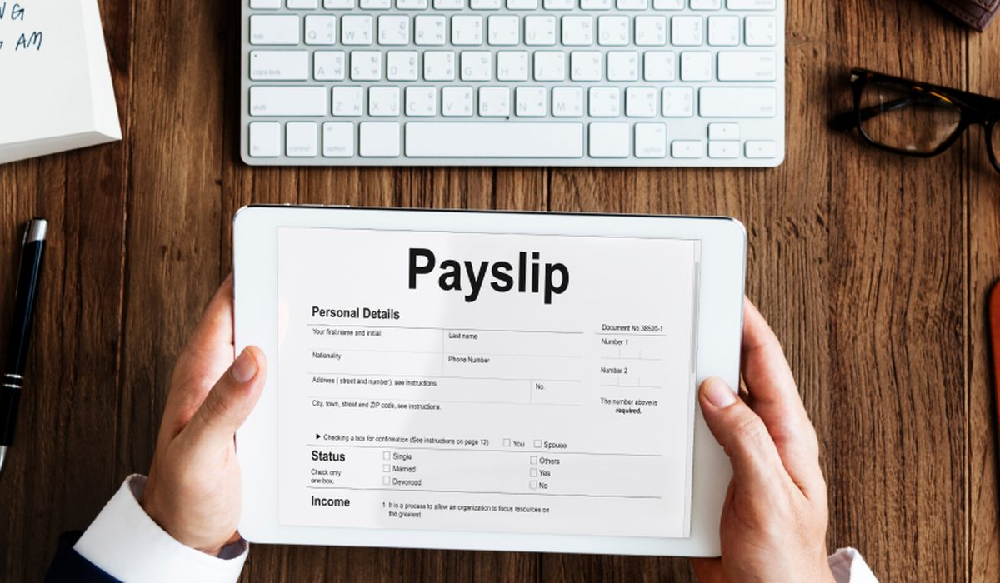

En bref
Combien coûtent les titres-restaurant à l'employeur ? En 2026, la part patronale atteint au maximum 7,32 euros par titre, exonérée de cotisations, soit 146,40 euros par salarié et par mois sur 20 jours. S'y ajoutent les frais de l'émetteur, de 1,90 à 4,60 euros par salarié et par mois selon le volume. À pouvoir d'achat égal, c'est environ 40 % moins cher qu'une prime sur salaire.
- La prise en charge doit rester entre 50 et 60 % de la valeur faciale pour être exonérée
- Le plafond d'exonération est passé à 7,32 euros par titre au 1er janvier 2026
- Les frais de l'émetteur ne sont jamais publiés et se négocient avec le volume
- La part patronale est déductible du bénéfice imposable de l'entreprise
Sommaire de ce comparatif
Les deux composantes du coût
Un titre-restaurant coûte deux choses à l'employeur. La part patronale, d'abord, qui finance le repas du salarié et constitue l'avantage lui-même. Les frais de l'émetteur, ensuite, qui rémunèrent le service. On confond souvent les deux. La première est un choix de politique salariale, la seconde un prix d'achat qu'il faut négocier.
La part patronale est encadrée. Elle doit représenter entre 50 et 60 % de la valeur du titre et ne pas dépasser 7,32 euros en 2026 pour rester exonérée. Les frais, eux, sont libres.
Le coût de 10 à 500 salariés
Le tableau retient la configuration la plus courante, un titre de 12,20 euros financé à 60 %, qui atteint pile le plafond d'exonération.
| Profil | Note /10 d'intérêt | Salariés | Part patronale par an | Frais émetteur par an | Coût total par an |
|---|---|---|---|---|---|
| TPENotre choix | 9,1 | 10 | 17 568 € | 240 € à 552 € | 17 808 € à 18 120 € |
| Petite PME | 9,2 | 25 | 43 920 € | 600 € à 1 380 € | 44 520 € à 45 300 € |
| PME | 9,3 | 50 | 87 840 € | 1 140 € à 2 400 € | 88 980 € à 90 240 € |
| PME structurée | 9,3 | 100 | 175 680 € | 2 280 € à 4 320 € | 177 960 € à 180 000 € |
| ETI | 9,4 | 200 | 351 360 € | 4 560 € à 7 200 € | 355 920 € à 358 560 € |
| Grande ETI | 9,4 | 500 | 878 400 € | 10 200 € à 15 600 € | 888 600 € à 894 000 € |
Relevé de démonstration. Titre de 12,20 euros financé à 60 %, 20 jours travaillés par mois, 12 mois. Frais sur devis types d'octobre 2026.

Les frais de l'émetteur pèsent entre 1 et 3 % du budget total. C'est peu, mais c'est la seule ligne qui se négocie. Sur une ETI de 200 salariés, l'écart entre deux devis représente l'équivalent de vingt salariés équipés pendant un mois.
Titre-restaurant ou prime, le calcul
Pour donner 146,40 euros de pouvoir d'achat déjeuner par mois à un salarié, l'employeur a deux voies.
| Option | Coût employeur par mois | Net perçu par le salarié | Impôt sur le revenu |
|---|---|---|---|
| Titre-restaurant (part patronale) | 146,40 € + frais | 146,40 € en titres | Non imposable |
| Prime brute équivalente en net | environ 245 € | 146,40 € | Imposable |
| Prime de panier soumise à cotisations | environ 210 € | environ 115 € | Imposable |
Relevé de démonstration, ordres de grandeur pour un salarié non cadre au taux de cotisations moyen.
À pouvoir d'achat égal, le titre-restaurant coûte environ 40 % de moins qu'une prime. C'est l'argument qui convainc un dirigeant de TPE en une minute.
Ce qui fait varier les frais de l'émetteur
- Le volume de titres commandés, premier levier de négociation
- Le support, la carte coûtant moins cher à gérer que le chèque papier, qui demande impression et livraison
- Les frais de création et de renouvellement de carte, parfois offerts
- Les services inclus, comme l'accompagnement, le reporting ou l'intégration à la paie
- La durée d'engagement et la présence d'autres avantages chez le même émetteur
Demandez toujours un devis détaillé ligne par ligne. Un taux de frais bas peut cacher des frais de carte, de livraison ou de rechargement facturés à part.
Comment réduire la facture
Viser exactement le plafond
Une part patronale de 7,32 euros, ni plus ni moins. Au-dessus, l'excédent est soumis à cotisations. En dessous, l'avantage perd de son intérêt face à une prime.
Passer à la carte
La carte supprime les frais d'impression et de livraison et simplifie la gestion des absences. Plus de 90 % du volume de titres passe déjà par une carte ou une application.
Regrouper les avantages
Titre-restaurant, cadeaux et CESU chez le même émetteur donnent du poids dans la négociation des frais.
Notre verdict
En 2026, un titre-restaurant coûte au maximum 7,32 euros de part patronale exonérée, plus 1,90 à 4,60 euros de frais par salarié et par mois. C'est l'avantage le plus rentable pour l'entreprise comme pour le salarié.
Si vous lancez le dispositif, calez la part patronale sur le plafond et faites jouer la concurrence sur les frais. Si vous l'avez déjà, renégociez dès que votre effectif augmente.
Questions fréquentes
Combien coûte un titre-restaurant à l'employeur en 2026 ?
La part patronale est plafonnée à 7,32 euros par titre pour rester exonérée, soit 146,40 euros par mois sur 20 jours. Les frais de l'émetteur ajoutent 1,90 à 4,60 euros par salarié et par mois selon nos devis types.
Les titres-restaurant sont-ils déductibles pour l'entreprise ?
Oui, la part patronale est une charge déductible du résultat imposable, et elle est exonérée de cotisations sociales dans la limite de 7,32 euros par titre en 2026.
Quel pourcentage l'employeur doit-il financer ?
Entre 50 et 60 % de la valeur faciale du titre. En dehors de cette fourchette, l'exonération de cotisations ne s'applique plus.
Combien de titres-restaurant par mois pour un salarié ?
Un titre par jour travaillé dont le repas tombe dans l'horaire de travail. Pour un temps plein, cela représente en général 18 à 22 titres par mois, absences déduites.
Les frais des émetteurs de titres-restaurant sont-ils publics ?
Non, aucun émetteur ne publie de grille. Les frais se négocient sur devis, en fonction du volume, du support et des services inclus.
Notre méthode
Ce comparatif repose sur des données publiques, vérifiables une par une.
- Les plafonds d'exonération sont ceux publiés par l'URSSAF et le BOSS pour l'année en cours
- Les réseaux d'acceptation, les supports et les fonctionnalités sont relevés sur les sites officiels des émetteurs
- Les frais et commissions sont des ordres de grandeur issus de devis types, à confirmer par un devis à votre nom
- Les avis utilisateurs proviennent des stores d'applications et des plateformes d'avis vérifiés
- La grille de notation est identique d'un comparatif à l'autre et publiée en bas de chaque article